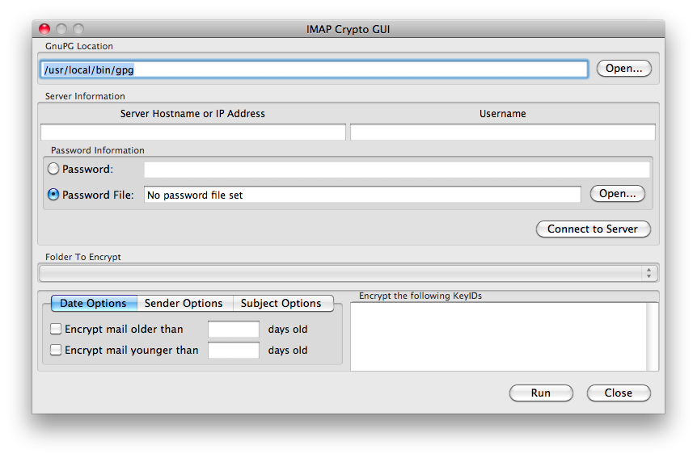
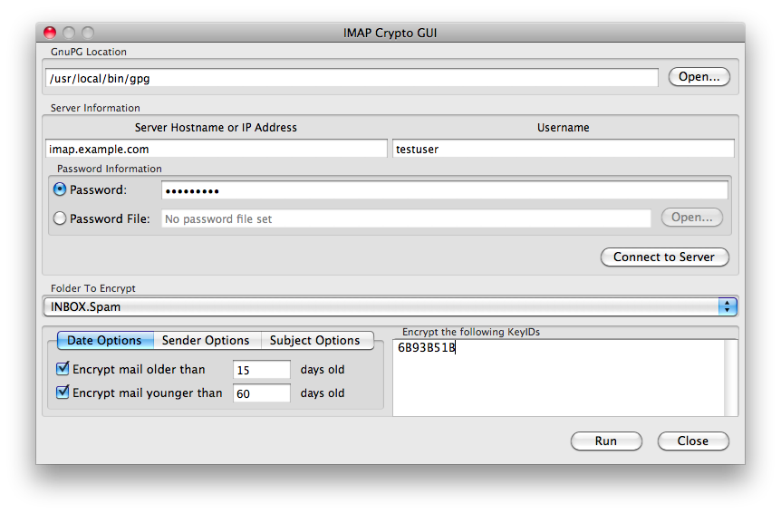
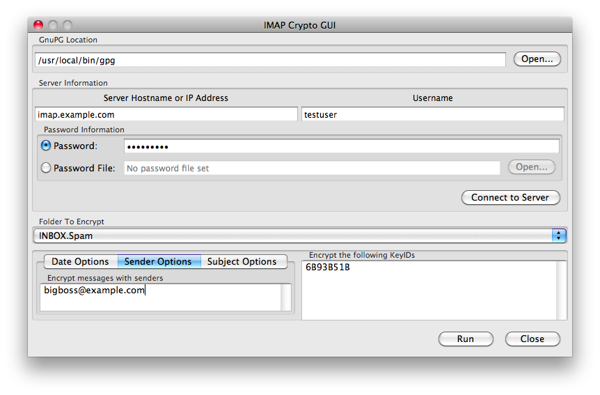
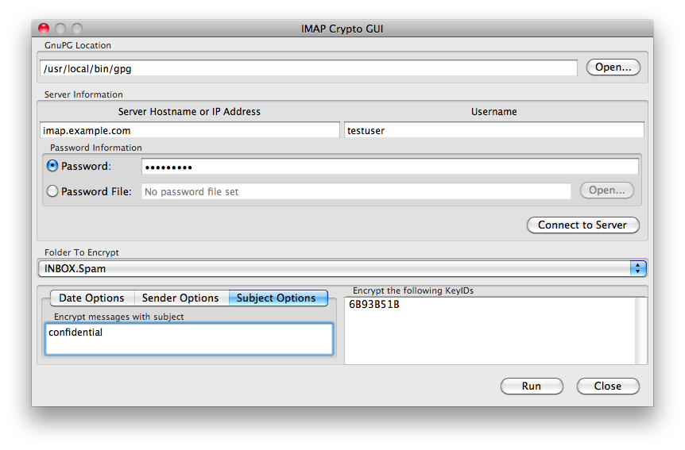
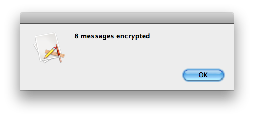

IMAPCrypt User Documentation
About IMAPCrypt
IMAPCrypt uses Gnu Privacy Guard (GPG) to PGP-encrypt emails in an IMAP folder. IMAP is a protocol
used to access email stored on a remote server (as opposed to POP3 that retrieves the email to store
locally). PGP is an encryption standard that uses public-private key pairs to encrypt a symmetric
key that is used to encrypt the body of an email. The public key is used to encrypt and the private
key is used to decrypt the email. Make sure that you have the proper private key for the public key
that you specify to encrypt emails to ("the recipient"), or you will never read those emails again.
Warning - Use at your own risk
We are furnishing this item "as is". We do not provide any warranty of the item whatsoever,
whether express, implied, or statutory, including, but not limited to, any warranty of
merchantability or fitness for a particular purpose or any warranty that the contents of
the item will be error-free.
In no respect shall we incur any liability for any damages, including, but limited to, direct,
indirect, special, or consequential damages arising out of, resulting from, or any way connected
to the use of the item, whether or not based upon warranty, contract, tort, or otherwise; whether
or not injury was sustained by persons or property or otherwise; and whether or not loss was
sustained from, or arose out of, the results of, the item, or any services that may be provided
by us.
In short, this tool has a high likelihood of destroying your email. You should back up your email,
perform limited tests, and then verify that everything worked.
Using the GUI Interface
When you open the tool, it will attempt to automatically detect an installation of GPG. If it is not
found, then you will need to click Open... and specify the path to gpg or gpg2.

Connecting to the IMAP server
Enter your IMAP server's hostname or IP address into the "Server Hostname or IP Address" field. Type
in your username into the "Username" field. There are two ways to specify your password, by typing it
into the password field or by specifying a file with the password on the first line. The second case
is useful for automation of the tool. After entering all the necessary connection details, press the
"Connect to Server" button. This will attempt the connection, and if successul, will enumerate your
IMAP folders for the folders selection box.

Selecting A folder
After the folders selection box is populated, you can select the folder that you want to process for
encryption. At this time, we do not offer recursive encryption, so you will need to do each folder
individually.
Limiting Email Encryption to a Date Range
To limit email encryption to a date range, activate the "Date Options" tab (which is activated by
default) and click on either or both of "Encrypt mail older than" or "Encrypt mail younger than"
checkboxes. Then type in the number of days old the message must be to considered for processing.
Limiting Email Encryption to Set of Senders
To limit email encryption to a set of senders, click on the "Sender Options" tab and type in the email
address of any sender (one per line) that you want to have considered for encryption. If any sender matches,
it will pass the rule. If no sender matches, then the email will not be considered for encryption.
To turn off filtering by sender, simply remove all email addresses from the box.

Limiting Email Encryption to Set of Subjects
To limit email encryption to a set of subject line strings, click on the "Subject Options" tab and type in any
string (one per line) to test for within the subject. The string check is CASE SENSITIVE. If any string matches,
it will pass the rule. If no strings match, then the email will not be considered for encryption.
To turn off filtering by subject, simply remove all text from the box.

Encrypting your email
Specify the email address, or preferably the PGP KeyID, of the public key(s) that you want to encrypt
the emails to. PLEASE BE CAREFUL. If you encrypt to the wrong key and don't have a backup, you will
never see that email again. Press the "Run" button, and IMAPCrypt will reconnect to the IMAP server
and encrypt all messages in the specified IMAP folder.
